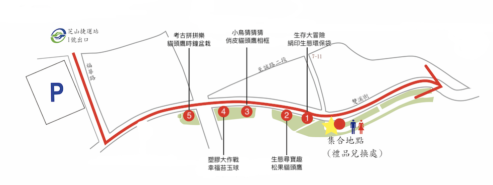
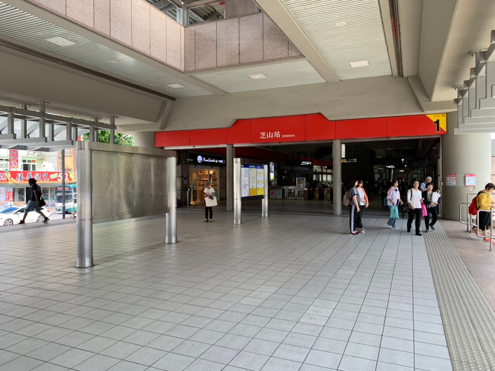
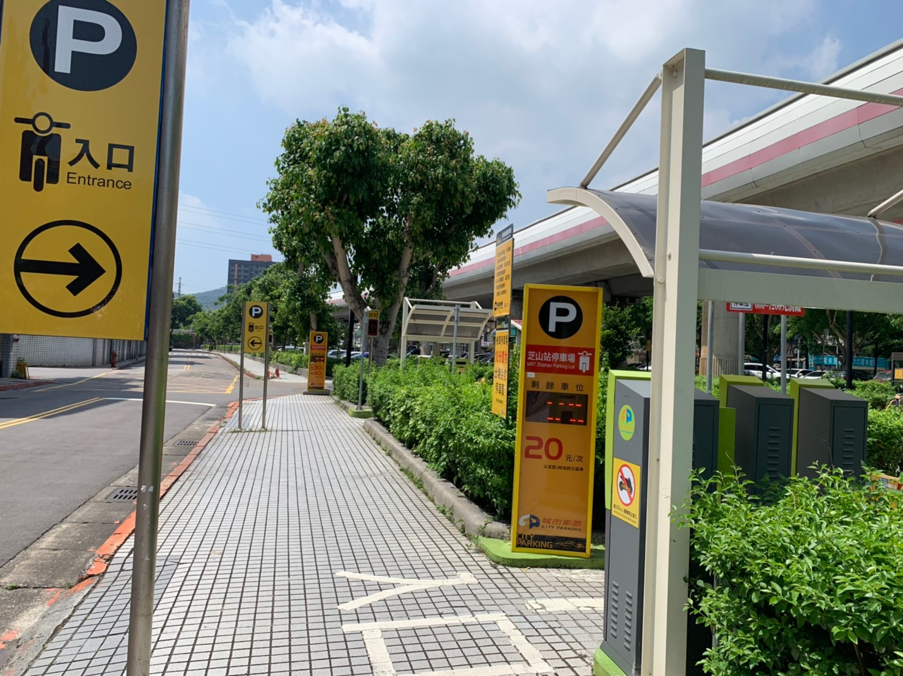
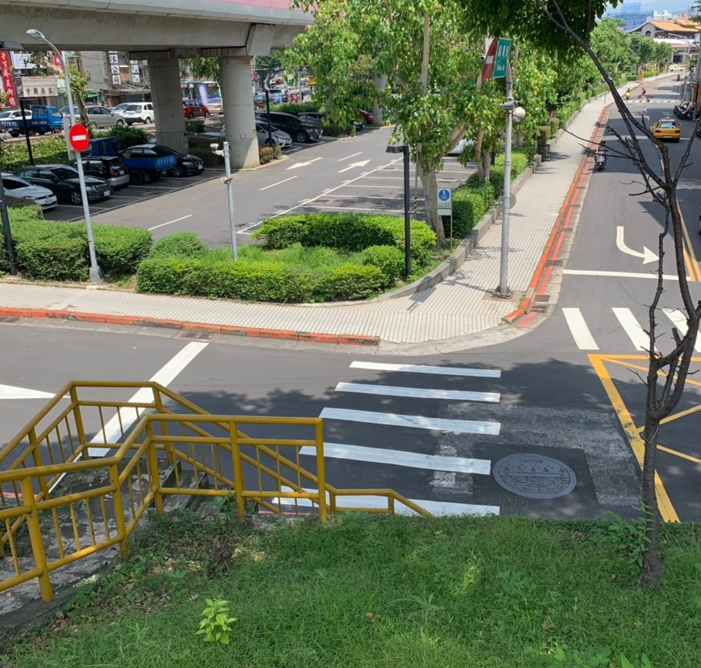
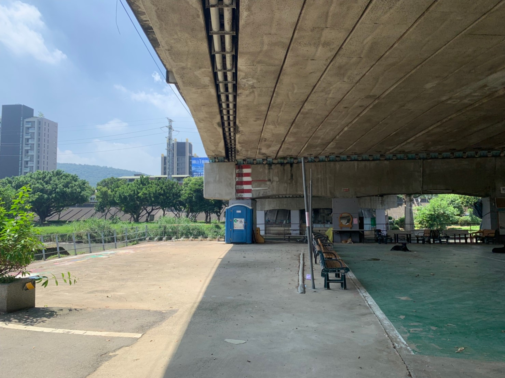
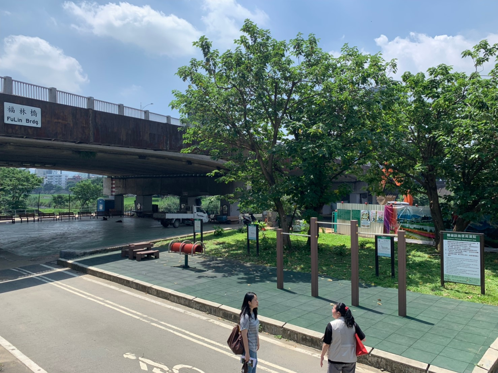
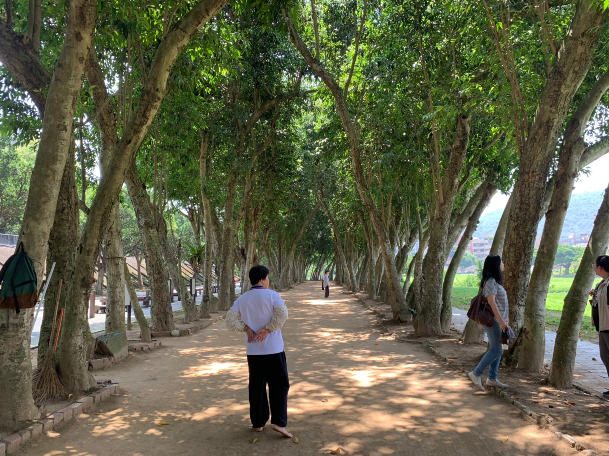
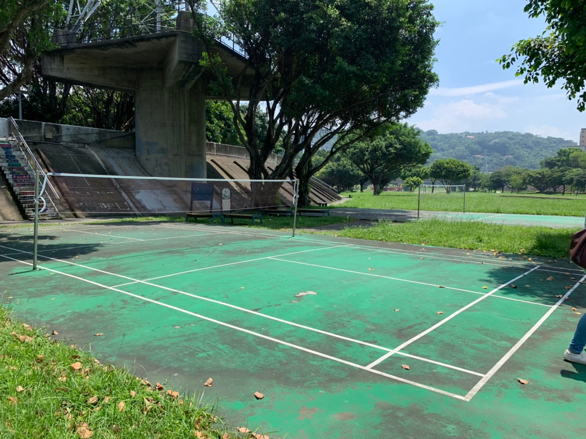

地圖
�
Google地圖懶人包
以下是圖文攻略支援
-
你的路線會是像這張圖，不然你會找不到NPC喔

-
抵達捷運芝山站後從 一號出口出來

-
沿著捷運高架架橋就會看到汽機車停車場。

-
直到這個轉角時你會看到家庭日的工作人員，從樓梯或由橋墩旁的斜坡走上防波提。

-
沿著防波提直走，會先看到第五站(DIY貓頭鷹時鐘與闖關-考古拼拼樂)。
周邊會有一座廁所以及洗手台。

-
繼續沿著防波提直走，會先看到第四站(DIY-幸福苔玉球與闖關-塑膠大作戰)。

-
接著會看到在林茵中的第三站(DIY-俏皮貓頭鷹像框與闖關-小鳥猜猜猜)。

-
第一跟第二站會非常接近，報到處也就在旁邊第二站(DIY-松果貓頭鷹與闖關-生態尋寶趣)，第一站(DIY-絹印環保袋與闖關-生存大冒險)。
報到處以及醫護站將會設置在此，所以同仁要先到這裡進行報導的作業在分別到各站去完成闖關以及DIY活動。
